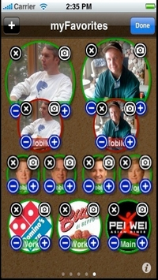

La lisibilité de la page
Ce premier critère concerne la lisibilité de la page. En effet, lors de sa navigation, l'utilisateur s'attend à avoir un contenu clairement lisible et facilement compréhensible. De plus, il ne faut pas qu'il se fatigue inutilement. Pour cette raison, deux points sont à prendre en compte.
Tout d'abord, les polices utilisées doivent être facilement lisibles et doivent correspondre au design du site Internet. Elles ne doivent pas être trop nombreuses et doivent se ressembler afin de garder une cohérence graphique.
Ensuite, la page doit avoir une disposition bien travaillée elle aussi. Sur un site orienté ordinateur, il est simple de séparer les différents blocs entre eux. Il est possible de faire cela grâce à des lignes, des éléments graphiques, tant que cela ne gêne pas la lisibilité. Mais sur une application ou un site mobile, il est préférable de séparer les blocs par des espaces et des blancs, pour rendre la page plus claire.
Bottega Romana
 Le site Bottega Romana est un bon exemple pour le critère de lisibilité. Il est responsive et même sur un écran plus petit
que celui d'un ordinateur, la page est bien lisible. Des espaces marquent les séparations entre les différents
blocs du site, qui eux-même sont séparés par des fonds de couleur différentes ou des images. Le tout reste cependant
bien coordonné.
Le site Bottega Romana est un bon exemple pour le critère de lisibilité. Il est responsive et même sur un écran plus petit
que celui d'un ordinateur, la page est bien lisible. Des espaces marquent les séparations entre les différents
blocs du site, qui eux-même sont séparés par des fonds de couleur différentes ou des images. Le tout reste cependant
bien coordonné.
myFavorites
 Sur l'application myFavorites, il est difficile de pouvoir de bien lire la page. Elle est beaucoup trop chargée par diverses informations, les images prennent beaucoup de place et il n'y a aucun texte explicatif, du moins sur cette page. Il aurait fallut mettre peut-être plus de page sur l'application et moins d'informations sur chacune.